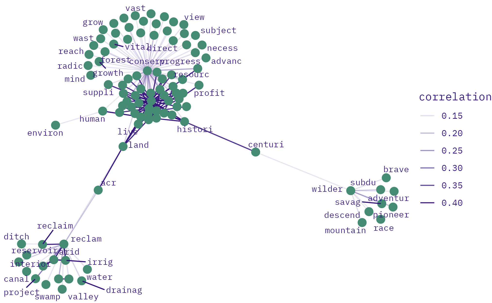
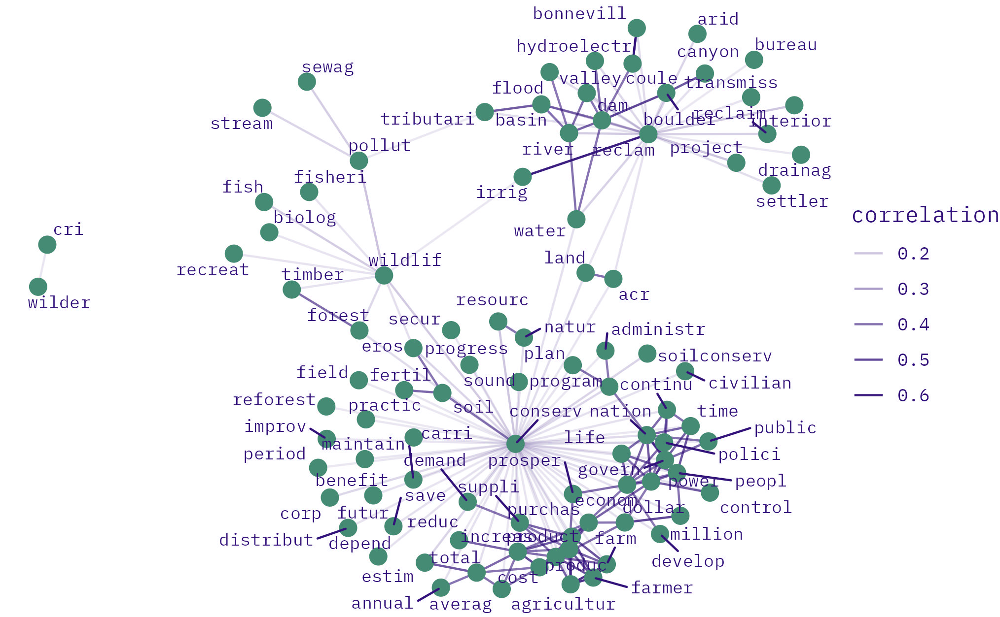
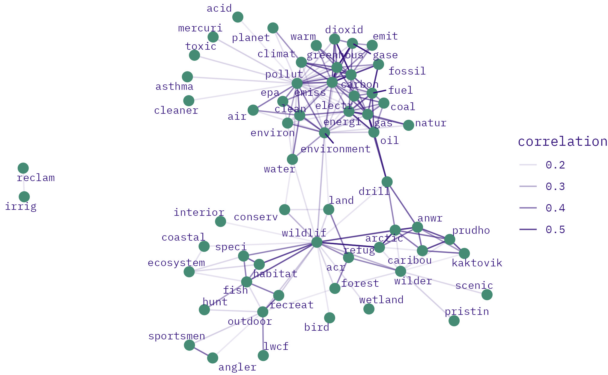
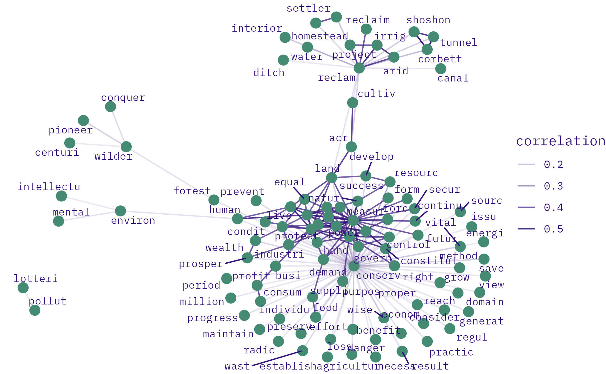
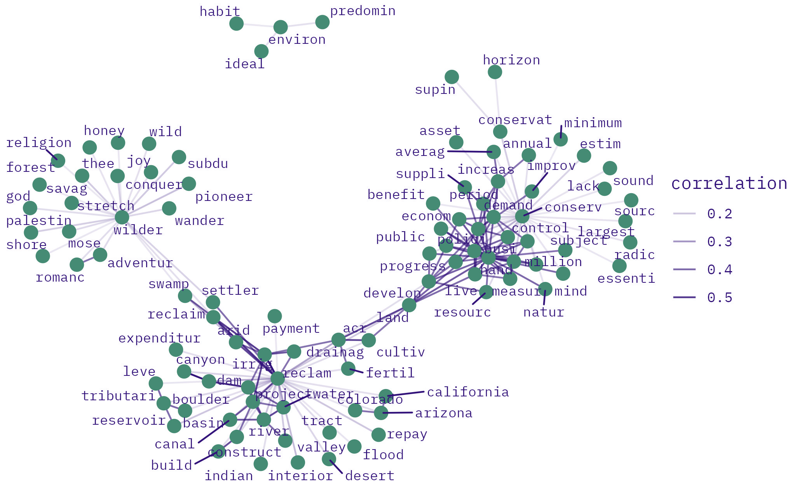
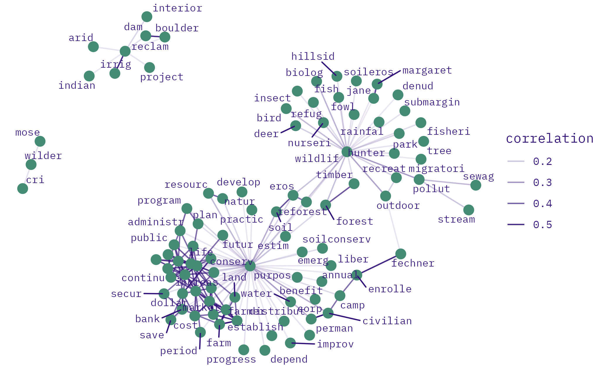
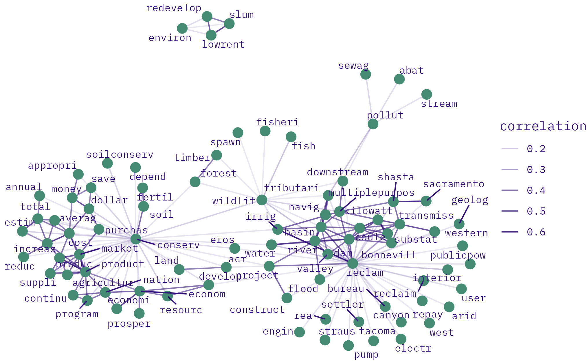
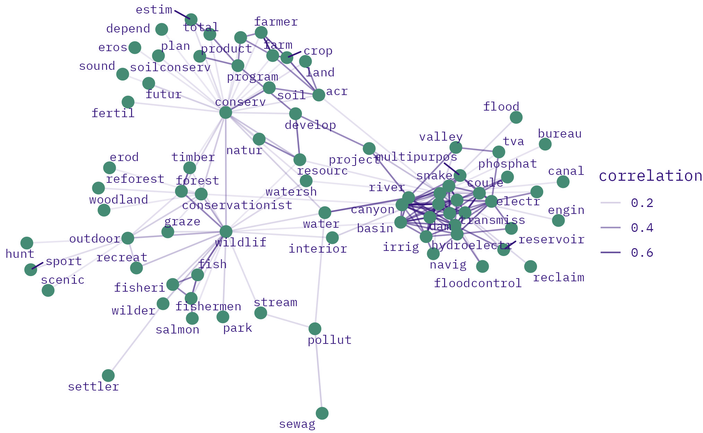
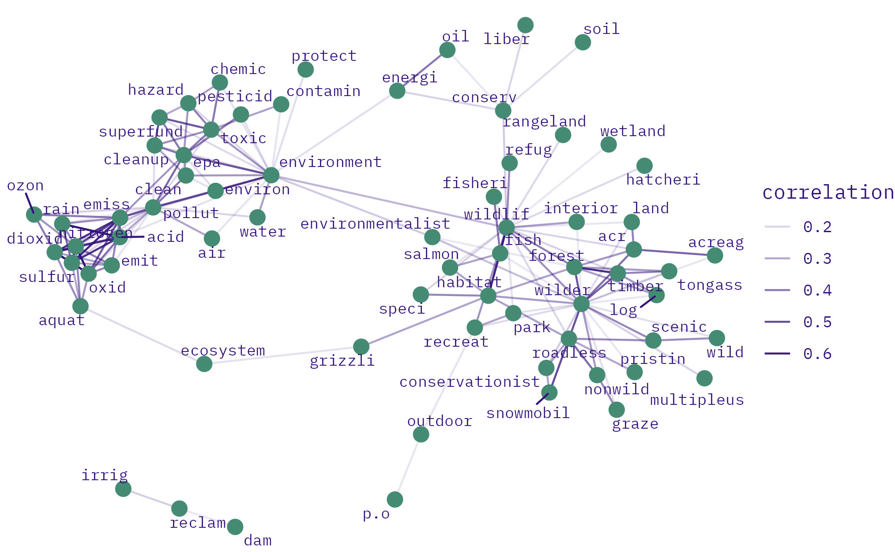
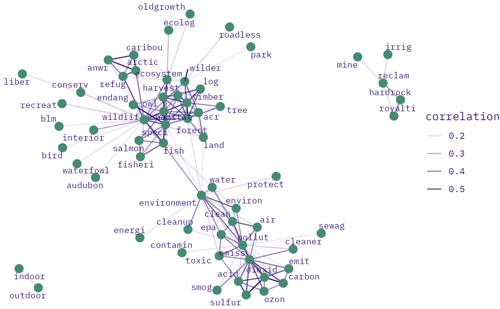

Skip to main content
CLC text mining
Show table of contents
Table of contents
1
INTRO
2
DATA
3
ENVIRO
4
LABOR
5
ENVIRO-LABOR
6
TOPIC MODELS
4
LABOR
4.1
co-occurrence
4.1.1
25-yr
4.1.1.1
co-occurrences with enviro keywords in labor speeches
1875
1900

1925

1950
1975
2000

4.1.2
10-yr
4.1.2.1
co-occurrences with enviro keywords in labor speeches
1900
1910

1920

1930

1940

1950

1960
1970
1980

1990

2000
2010
2020
3
ENVIRO
5
ENVIRO-LABOR
On this page
4
LABOR
4.1
co-occurrence
4.1.1
25-yr
4.1.2
10-yr